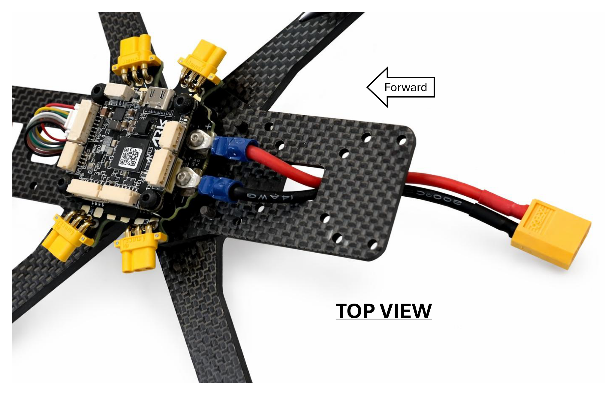

Task 7: Set up powertrain
Install the XT60 battery lead and plug all four motor leads into the ESC.
Parts required
- XT60 battery connector
- Two M2.5 × 6 mm round-head hex screws
- Lower frame with the FC/ESC stack installed
- Placeholder: two black zip ties from the frame kit for final motor-lead tie-down guidance
Tools required
- 1.5 mm Allen key
Step 1. Install the XT60 battery lead
- Retrieve the XT60 battery connector and two M2.5 × 6 mm round-head hex screws from the supplies shelf.
- Feed the blue ring connectors from the bottom side of the lower deck through the square cutout aft of the FC/ESC stack.
- Attach the ring connector on the red cable to the ESC binding post marked positive (+) and secure it with one M2.5 × 6 mm screw.
- Attach the ring connector on the black cable to the ESC binding post marked negative (−) and secure it with the second M2.5 × 6 mm screw.
- Do not catch either ring terminal on the JST-SH receptacle on the bottom of the flight controller.

Fig. 7a. Feed the XT60 battery lead through the aft square cutout.
Step 2. Plug in the motor leads
- Plug the motor cables into the corresponding ESC ports for all four motors.
- Seat each connector fully.
End state.
The XT60 lead is installed, and all four motor leads are connected to the ESC.
The XT60 lead is installed, and all four motor leads are connected to the ESC.
Step 3. Motor-lead tie-down
- Use the two black zip ties from the frame kit, as well as two of the white zip ties from the supplies shelf, to secure each of the four motor wires about mid-length down the arm.
- The zip ties should be tight enough so that the cable will not be moving in flight. Cut off slack with the snips.
Placeholder.
This section is intentionally reserved for the final motor-lead tie-down method using the two black zip ties from the frame kit.
This section is intentionally reserved for the final motor-lead tie-down method using the two black zip ties from the frame kit.
Common errors
- Swapping the positive and negative battery leads.
- Catching a ring terminal on the JST-SH receptacle on the bottom of the flight controller.
- Leaving a motor connector only partially seated.